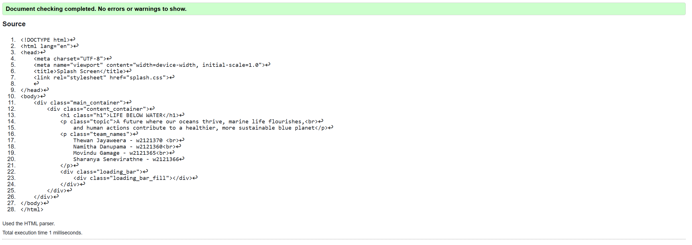
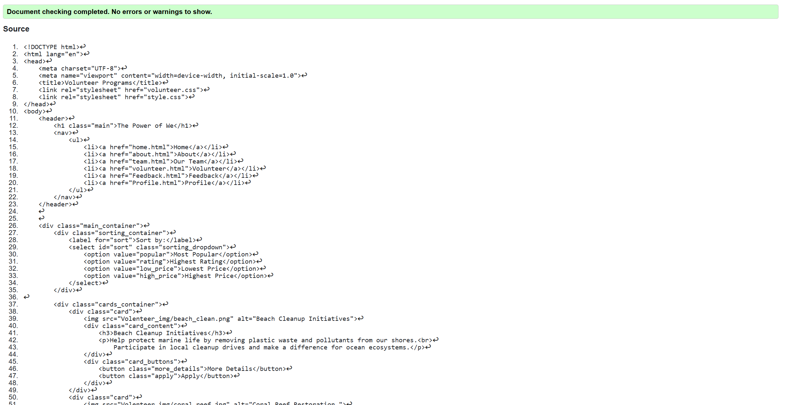
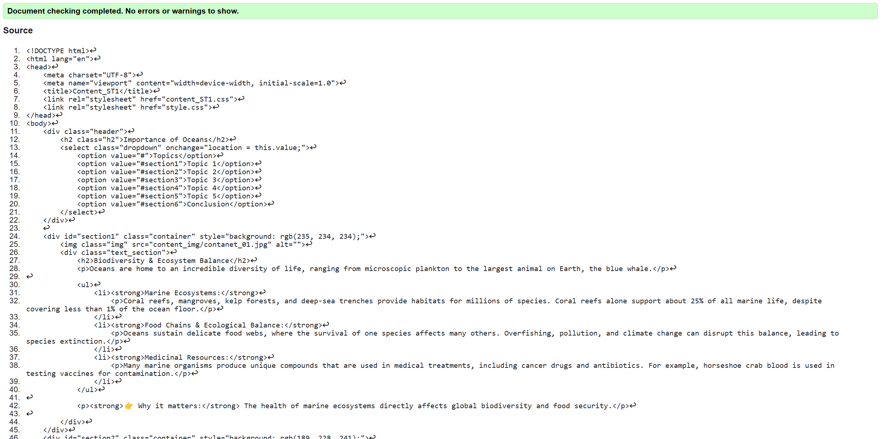

Splash Page validation report
The validationreport helps to identify wheather the splash screeen meets the standed of web accessibilities. Things like missing attributes and elements were cleared and it make the UI and the preformance higher. This process show how thw clean code affects on working web
Back to Page Editor page
Volunteer Page validation report
the validation cheker identified minor improvements in the code like tags and labels. After fixing those things UI improved and the readebility of the page too.
Back to Page Editor page
Content Page validation report
Validation highlighted syntax errors it helps to make the readebility of the code improved. Looking forward, regular validationwiil remain a key part of the development process.
